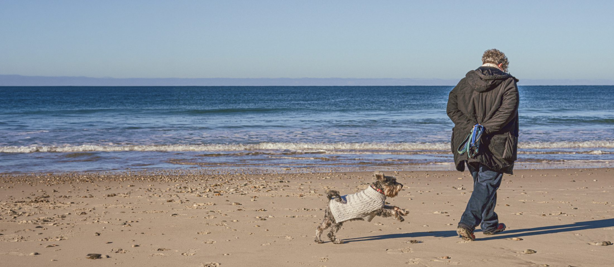
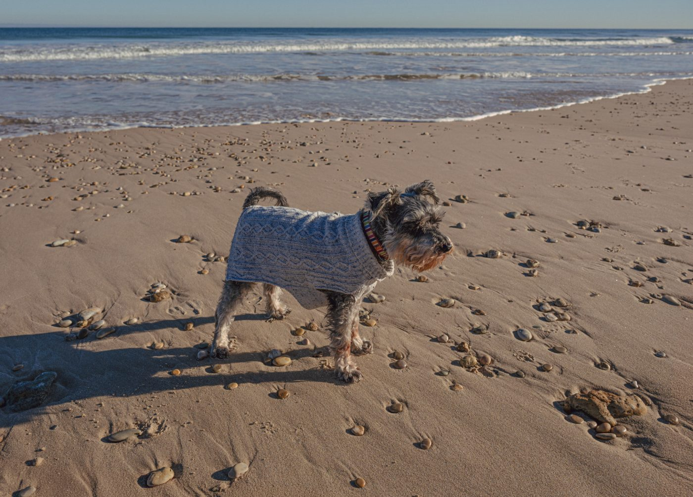
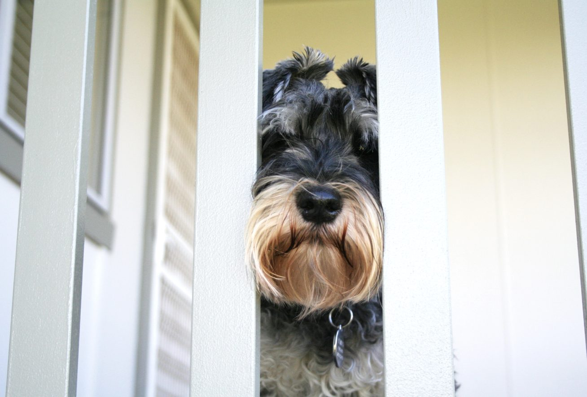

One little dog. One extraordinary legacy.
He loves. Faithfully. Wholeheartedly. Without expectation.
Mr Levi never set out to inspire a movement. He doesn't know he has become the heart behind a compassionate education platform supporting companion animals and the people who love them. He simply does what companion animals have always done so beautifully.
He loves.
Faithfully. Wholeheartedly. Without expectation.
Somewhere along the way, I realised that one small schnauzer had quietly become one of my greatest teachers — not because he is extraordinary, but because he reminds me that love is often found in life's most ordinary moments.
Levi is a miniature schnauzer with a gentle nature, a cheeky personality and a quiet wisdom that continues to surprise me. He shares my days in all the ways companion animals so naturally do — the morning routines, the walks, the quiet afternoons, the adventures, the laughter, the tears, and the comforting silence when no words are needed.
Like so many companion animals, he has become woven into the fabric of my life. Not simply as a pet, but as family. As the years have passed, our journey has evolved, just as every relationship does. Some seasons bring energy and adventure. Others invite us to slow down, adapt, notice the small things, and discover new ways of caring for one another.
Levi continues to remind me that love is not measured by how much we do. It is measured by how fully we are present.

Mr LeviA journey that began long before Levi.
People often ask how Mr Levi's Legacy began. The truth is that its roots reach much further back than one little dog.
Growing up in a small country town, surrounded by animals on my grandparents' farm, I was constantly immersed in the rhythms of life — dogs, cats, birds, kittens, puppies, farm animals and native wildlife.
Birth. Illness. Recovery. Loss.
Life and death were never hidden from me. They were simply part of the natural cycle of loving and caring for living beings. As a child, I instinctively rescued injured animals whenever I could. If one died, I would gather flowers, say a quiet prayer, create a small ritual, and gently bury them.
Looking back, I realise I have probably always been comfortable with life's journey and end of life. Offering comfort, presence and compassion has simply always felt like part of who I am.
That path eventually led me to become an End-of-Life Doula, educator and advocate, supporting individuals and families through some of life's most vulnerable moments. The heart of that work — being fully present, offering comfort, and helping people feel less alone in life's hardest moments — is exactly what I now bring to companion animals and the people who love them.
Yet throughout all those years, companion animals continued to teach me lessons that no textbook ever could.


The questions Levi helped me ask.
As Levi entered his senior years — and as he continues to teach me each day — I found myself asking questions that so many companion animal guardians quietly carry:
The more I searched for answers, the more I realised that countless families were asking exactly the same questions. Many felt overwhelmed. Many felt unprepared. Many simply wanted reassurance that they were doing the very best they could.
That realisation became the beginning of Mr Levi's Legacy™.
Why Mr Levi's Legacy™ exists.
Mr Levi's Legacy™ is not named because Levi's story is more important than any other companion animal's story. It is named because every meaningful legacy begins with one life that quietly changes another.
Levi changed mine.
My hope is that this work honours the journeys of countless companion animals who continue to shape, comfort, teach and love the people fortunate enough to walk beside them.
Mr Levi's Legacy™ exists to help companion animal guardians feel more informed, more confident and less alone. Through compassionate education, practical resources, thoughtful planning, advocacy and community, we hope to support every stage of the journey — from belonging and living well, to changing needs, illness, comfort care, remembrance and legacy.
Because preparation is never about giving up. It is another expression of love.
The HEART™ behind everything we do.
Everything you will find within Mr Levi's Legacy™ begins with one simple belief. Caring for a companion animal is never a series of isolated events. It is a relationship — a lifelong journey built on connection, trust, compassion, advocacy and love.
That belief became the HEART™ Companion Animal Care Framework. It recognises that every companion animal's journey is unique. Some companions live long and healthy lives. Others experience illness, disability, surgery, palliative care, hospice support or unexpected loss. Whatever the journey looks like, every stage deserves thoughtful, compassionate care.
The HEART™ Framework is more than a philosophy. It is the foundation from which every article, resource, guide, tool and conversation within Mr Levi's Legacy grows.
Explore the HEART™ Companion Animal Care Framework →Our mission is to help people care for their companion animals with confidence, compassion, preparedness, dignity, advocacy and love throughout every stage of life's journey. We believe knowledge empowers. Preparation brings confidence. Advocacy protects wellbeing. And love remains at the heart of it all.
Levi continues to teach me every day. He reminds me that love often becomes quieter over time. It is found in slowing our pace. In noticing small changes. In adapting with compassion. In advocating when they cannot speak for themselves. In celebrating ordinary days. In making memories while we still can. And in recognising that every stage of life's journey has meaning.
My hope is that Mr Levi's Legacy™ becomes more than a website. I hope it becomes a trusted companion — a place you return to for guidance, reassurance, practical support and gentle encouragement whenever you need it.
Whether you are welcoming a new companion into your life, sharing the joy of living well, navigating changing needs, facing illness, making difficult decisions, grieving a beloved friend, or simply wanting to love them as well as you can — you are welcome here.
Because every companion animal deserves to be cared for with compassion, dignity and love. And every person who loves them deserves to feel supported along the way.
Wherever you and your companion are on life's journey, you are welcome here. We are honoured to walk beside you, together, through every stage.

Stay close to the journey.
Join our email community for gentle guidance, new resources and compassionate support — arriving with care, whenever you need it.